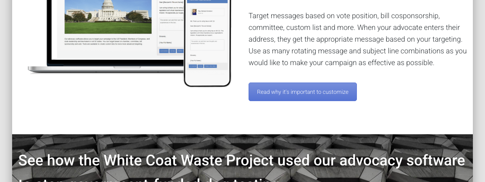
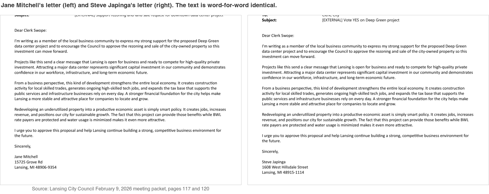
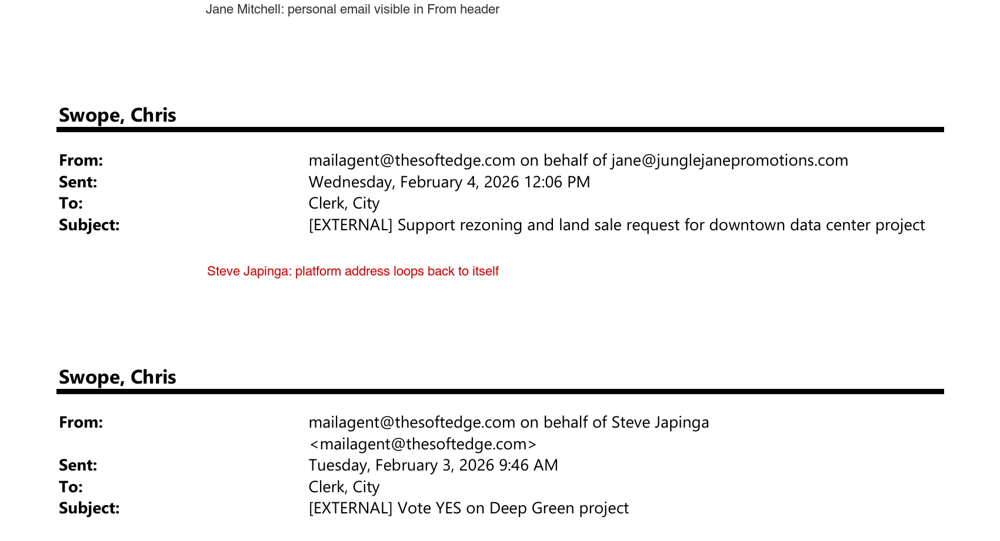
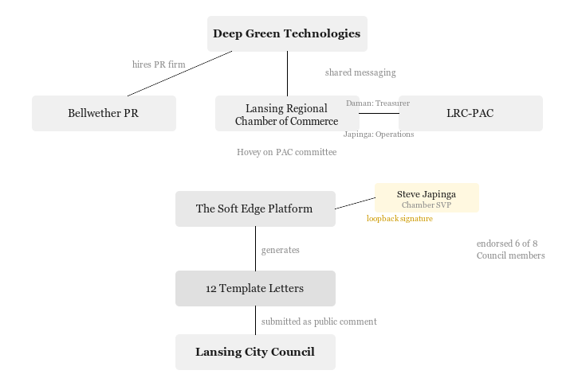
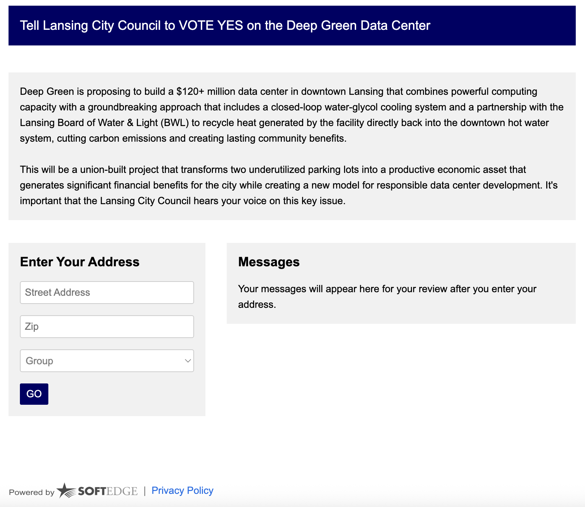
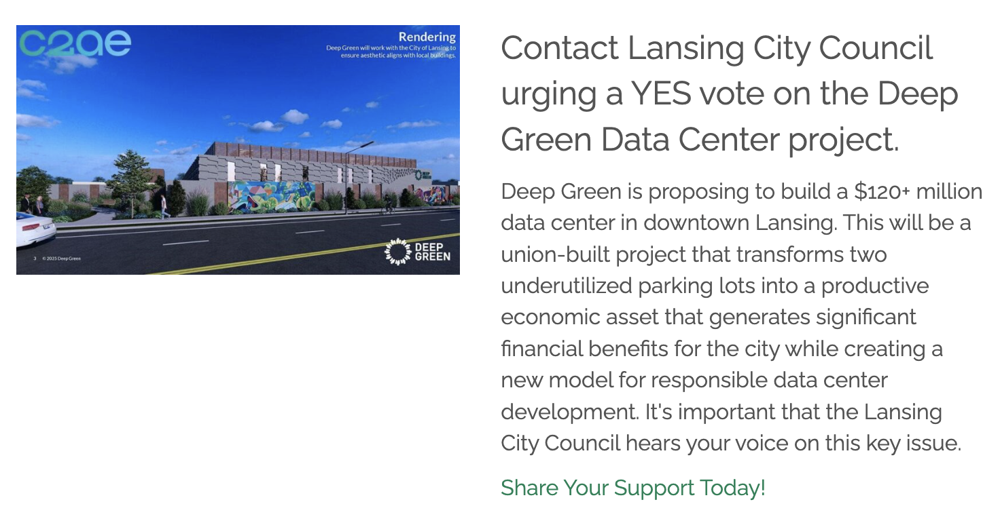

Lansing: Email Headers Reveal Deep Green Support Letters Were Platform-Generated
The campaign's web infrastructure has been identified, including the CongressWeb account, distribution URL, and a direct link from the Chamber's homepage. See update below.
LANSING, Mich. -- All 12 letters of support submitted to the Lansing City Council for the February 9, 2026 Deep Green Technologies data center hearing were routed through The Soft Edge, a commercial advocacy platform that sends pre-written template emails on behalf of signers. Three groups of letters are word-for-word identical across different signers. Seven distinct template variants targeted different demographics (fiscal conservatives, small business owners, union members, tech advocates).
One of those letters came from Steve Japinga, Senior Vice President of Public Affairs at the Lansing Regional Chamber of Commerce and operational manager of the LRC-PAC (MiTN Committee 000516). He identified himself only as "a member of the local business community." He did not disclose his Chamber title, his PAC role, or any institutional affiliation.
Email header analysis of the original PDF attachments, printed from City Clerk Chris Swope's Outlook inbox, shows that Japinga's email has the administrator loopback pattern: his "on behalf of" field routes back to mailagent@thesoftedge.com instead of exposing a personal email address. He is the only sender in the first batch of letters without a real email behind his name.
Steve Japinga's Roles
According to IRS Form 990 filings (EIN 38-0745180), Japinga earns $108,646 per year from the Chamber. He is listed as the operational contact for the LRC-PAC at sjapinga@lansingchamber.org in MiTN Committee 000516 records. Before joining the Chamber, he was Managing Director of Capitol Strategies Group, a lobbying firm referenced in City Pulse reporting from 2019.
At the Lansing Planning Commission November 5, 2025 meeting, Japinga spoke in support of Deep Green, sent the Chamber's formal support letter from his Chamber email (CC'ing Mayor Andy Schor and Planning Director Rawley Van Fossen), and submitted the Chamber's official position on the rezoning. He later submitted a second letter through The Soft Edge identifying himself only as a community member.
The Soft Edge Platform
The Soft Edge, Inc. is a SaaS advocacy platform headquartered in McLean, Virginia. Founded in 1990, the company has 7 employees and claims 2,000+ clients including IBM and the American Chemical Society.
"Use as many rotating message and subject line combinations as you would like to make your campaign as effective as possible."
The Soft Edge, Inc., product page for Congress Plus Advocacy software

The mailagent@thesoftedge.com relay address appears in federal regulatory comment records on regulations.gov, where the EPA uses plagiarism detection algorithms to flag form letter campaigns. Lansing City Council has no equivalent detection tools.
The platform works as follows: a client purchases a campaign, drafts template letters, enrolls supporters (either by sending signup links or by adding names directly), and the platform sends each letter under the signer's name via its relay address. Recipients receive what appear to be individual emails.
Template Analysis
All 12 letters are preserved in two PDFs attached to the Lansing City Council February 9, 2026 meeting packet: "5 support deep green.pdf" (5 letters) and "7 deep green letters.pdf" (7 letters).
Three core template groups contain word-for-word identical text across different signers:
- Template A ("Tax Base / Responsible Development"), sent by Mark McDaniel, Joseph Campbell, Gordon VanWieren, and one other
- Template B ("Business Community / Open for Business"), sent by Jane Mitchell and Steve Japinga
- Template C ("Small Business Ripple Effect"), sent by Michael Hull, Peter Campbell, and Megan Doherty
Four additional templates targeted union members, community leaders, and tech advocates individually. All 12 letters close with the same call to action: "approve the rezoning and sale... so this investment can move forward."

Shared Messaging With Deep Green CEO
Deep Green CEO Mark Lee's formal letter ("Communications about Z-2-25.pdf," attached to the Lansing City Council February 9, 2026 meeting packet) describes the data center's cooling technology as "common throughout northern Europe." That exact phrase appears in Template A's letters, which were presented as independent citizen writing.
Additional phrases appear across both the CEO's letter and the citizen templates: "underutilized" property, "closed-loop cooling system," and "strengthen the tax base." The same phrases also appear in the Chamber's formal letter. The overlap indicates the templates were drafted using Deep Green's own messaging materials.
Email Header Forensics
The PDFs from the February 9, 2026 Council meeting packet were printed from Clerk Swope's Outlook inbox. Because they are Outlook print-to-PDF captures, they preserve SMTP email headers, including the "on behalf of" field. The plain-text .txt versions of the same documents strip these headers.
When The Soft Edge sends on behalf of someone who signed up independently and entered their own email, the header reads:
From: mailagent@thesoftedge.com on behalf of [Name] <user@realemail.com>
When the campaign administrator sends from the admin dashboard, or when someone is enrolled without providing their own email, the header loops back to the platform address:
From: mailagent@thesoftedge.com on behalf of [Name] <mailagent@thesoftedge.com>

The results across all 12 letters:
Batch 1 (5 letters): Jane Mitchell (jane@junglejanepromotions.com), Mark McDaniel (capmac42154@hotmail.com), Joseph Campbell (joe.campbell@capitolnational.com), and Dustin Howard (dustin@local333.com) all show real email addresses. Steve Japinga shows the loopback: mailagent@thesoftedge.com.
Batch 2 (7 letters): Michael Hull (m.hull@superiorelectricinc.com) shows a real email address. The remaining six (Peter Campbell, Marchon Holmes, Jim Baker, Aaron Helman, Gordon VanWieren, and Megan Doherty) all show the loopback.
Five of 12 senders (42%) provided their own email addresses. Seven (58%) show the loopback pattern, meaning they were enrolled by the administrator without providing a personal email.
Japinga is the only loopback sender in Batch 1. He has an email address on file with the state as the LRC-PAC's contact (sjapinga@lansingchamber.org), but it does not appear in the header. This pattern is consistent with sending from an administrator account rather than signing up as a participant.
Sender Affiliations
The five senders whose real email addresses are visible are affiliated with businesses and unions: Capitol National Bank (Campbell), UA Local 333 plumbers and pipefitters union (Howard), Superior Electric Inc. (Hull), and Jungle Jane Promotions (Mitchell).
UA Local 333's PAC donated $1,000 to LRC-PAC on October 27, 2025, according to MiTN Committee 000516 records. The union's VP, Jeremy Garza, is an LRC-PAC-endorsed Council member. Howard's template letter emphasizes "30 union construction jobs."
Three senders listed addresses outside Lansing: Marchon Holmes in Jackson (approximately 45 minutes away), Aaron Helman in Ionia (approximately 50 minutes), and Gordon VanWieren in Okemos. All three show the loopback pattern.
Support vs. Opposition in the Hearing Packet
The public comment record for the February 9, 2026 Council hearing ("Communications about Z-2-25.pdf," attached to the Lansing City Council February 9, 2026 meeting packet) contains the full record. In support of Deep Green: 1 formal Chamber letter, 12 Soft Edge template letters, 1 MICEF (Michigan Conservative Energy Forum) letter, and 1 individual citizen email from Marcie Alling (marciejalling@gmail.com, November 18, 2025). In opposition: 12+ individual emails with unique text and personal addresses, plus 3 handwritten postcards.
Every opposition email contains original language. Every support letter except Alling's was either institutional or routed through The Soft Edge.
Organizational Connections
According to WKAR reporting from January 16, 2026, Deep Green retained Bellwether PR for communications. Bellwether's sole Director, Josh Hovey, is also a committee member of the LRC-PAC. The LRC-PAC's Treasurer is Tim Daman, the Chamber's CEO. MiTN records show the LRC-PAC endorsed 6 of the 8 Council members who voted on the Deep Green rezoning and donated $5,000 to Lansing Future PAC. (See: How the Chamber's PAC Shapes Who Governs and What Gets Built.)

At the Lansing Planning Commission November 5, 2025 meeting, four connected participants appeared: Hovey spoke as Deep Green's PR representative, Daman spoke as Chamber CEO, Japinga spoke as a Chamber representative and submitted the formal Chamber letter, and that letter CC'd Mayor Schor and Planning Director Van Fossen.
Open Question: Who Purchased and Administered the Campaign?
The Soft Edge is a paid platform. The CongressWeb account is registered under "Deep Green Technologies USA LLC" (see March 14, 2026 update below). This identifies the organization name on the account but does not resolve who contracted with The Soft Edge, who paid for the service, who drafted the seven template variants, or who enrolled the seven loopback senders. A PR firm or trade association can register a campaign under a client's name.
Possible purchasers/administrators remain: Deep Green Technologies (the account bears their name and the talking points originated with the company), Bellwether PR (Deep Green's retained communications firm, and the 7-audience segmentation is consistent with professional PR work), the Chamber (Japinga has the loopback signature and institutional access), or the LRC-PAC (Japinga manages PAC operations, though MiTN expenditure records do not show payments to The Soft Edge).
The Chamber's 2021 IRS Form 990, available through ProPublica Nonprofit Explorer, shows $153,968 in "Other fees" on Part IX. This amount falls at 9.3% of total expenses, just below the 10% threshold that would require itemization on Schedule O.
A FOIA request to the City of Lansing for contracts or invoices with The Soft Edge, Inc. could identify the purchaser. The Soft Edge's client services agreement and payment records are not public.
Precedent
In 2019, the New Orleans City Council fined Entergy $5 million after the utility hired a PR firm that subcontracted Crowds on Demand to pay actors to testify as residents in favor of a $210M natural gas power plant.
In 2021, New York Attorney General Letitia James reported that 18 million of 22 million comments submitted during the FCC's net neutrality proceeding were fake, generated by commercial platforms using what the AG's office described as "Mad Libs-style blanks" to create distinct-looking text. Related settlements totaled over $5 million.
A 2020 House Financial Services Subcommittee hearing established that no government body routinely verifies commenter identity and that the federal statute that could address manufactured comments (18 U.S.C. Section 1001) has never been enforced in this context. The Administrative Conference of the United States subsequently recommended federal agencies adopt de-duplication tools and identity verification for public comments.
Brookings Institution research found 16% of EPA proposed rules faced mass comment campaigns. The FTC banned fake reviews and testimonials in August 2024, though that rule covers commercial endorsements, not political advocacy. The Iowa Law Review has argued states should amend deceptive trade practice statutes to cover astroturfing. Michigan has not done so.
Legal Status in Michigan
Michigan has no municipal lobbying disclosure requirement. The Soft Edge campaign does not violate any current Michigan statute. If Chamber funds were used for the campaign, that could constitute political intervention restricted for 501(c)(6) tax-exempt organizations. If the LRC-PAC paid for it and did not report the expenditure, that would be a campaign finance reporting violation under Michigan law.
Update: March 14, 2026 — Campaign Infrastructure Identified
The advocacy campaign's web infrastructure has been identified. The letters were generated through a CongressWeb account registered to Deep Green Technologies USA LLC, hosted at congressweb.com/DGT/1. CongressWeb is a product of The Soft Edge; per platform documentation, the URL path uses the client organization's acronym. In this case: "DGT." The account is the only CongressWeb account involved; no accounts exist at the obvious acronyms for the Lansing Regional Chamber or Bellwether PR.
The campaign was distributed via takeaction.io/dgt/tell-lansing-city-council-to-vote-yes-on-the-deep-green-data-center. The domain takeaction.io is owned by The Soft Edge (it redirects to thesoftedge.com), serving as a brandless URL that does not reveal the platform to recipients.

congressweb.com/DGT/1. Visitors enter an address, select a "Group" from a dropdown menu, and are presented with pre-written messages to send to elected officials. The "Powered by Soft Edge" branding is visible at the bottom. Screenshot captured March 14, 2026.The screenshot reveals details not visible in the submitted letters. The form includes a "Group" dropdown menu, which is the mechanism behind the seven template variants identified in the original analysis. The Soft Edge's product literature describes this as targeting: different messages are shown based on which group a signer selects or is assigned to. The "Messages" panel states: "Your messages will appear here for review after you enter your address." Signers saw pre-written text after entering their location, not before.
A cache-busting timestamp on the campaign's CSS file (DGT_new.css?02032026084517) places the last configuration change at February 3, 2026, 8:45 AM. That is six days before the council vote and the same date as the earliest batch of letter submissions identified in the email header forensics. The embedded form was configured with hasHCaptcha = false (no human verification) and three display settings that suppress platform identification within the form (show_site_menu, show_action_titles, and show_action_descriptions all set to false).
Timeline: Private Distribution, Then Public
The campaign page had never been captured by the Wayback Machine and returned zero search engine results prior to March 14, 2026. The 12 template letters in the February 9 council packet were generated before the campaign had any known public link. The earliest batch of submissions occurred on February 3, and all 12 appeared in the hearing packet six days later. The original analysis describing the campaign as privately distributed remains accurate for that initial batch.
After those letters were already in the council's hands, the Lansing Regional Chamber of Commerce added a link to the campaign on its homepage. A callout block displays a Deep Green rendering, the campaign's talking points, and a green call-to-action reading "Share Your Support Today!" All three elements link to the takeaction.io/dgt/ URL. The promotional image was uploaded to the Chamber's WordPress site on or around February 11, 2026 (per HTTP Last-Modified header). That was two days after the council received the template letters.

takeaction.io/dgt/. The callout was added after the 12 template letters had already been submitted to the City Council. Source: lansingchamber.org, captured March 14, 2026.This identifies the account name but does not by itself answer who purchased, administered, or funded the campaign. A PR firm or trade association can register a campaign under a client's name. The Chamber homepage link shows the campaign was distributed through the trade association whose SVP of Public Affairs authored two of four Chamber press releases about Deep Green, serves as the operational contact for LRC-PAC, and submitted one of the 12 template letters with the administrator loopback signature.
The campaign page, CSS file, Chamber homepage, and associated assets were archived on March 14, 2026.
Methodology
This analysis is based entirely on publicly available documents: meeting packets from the Lansing CivicClerk portal (February 9, 2026 Council meeting, November 5, 2025 Planning Commission meeting), campaign finance records from MiTN, IRS Form 990 filings via ProPublica Nonprofit Explorer, and the Lansing Regional Chamber of Commerce website. Email header analysis was performed on the original PDF files attached to the Council hearing packet. The plain-text (.txt) versions of the same documents strip email headers and do not contain the forensic evidence described here.
The March 14 update is based on the HTML source code of publicly accessible pages at congressweb.com/DGT/ and takeaction.io, CSS file metadata, ExifTool analysis of the campaign logo asset, The Soft Edge's own platform documentation describing CongressWeb URL conventions, and the full HTML source of the Lansing Regional Chamber of Commerce homepage (extracted via curl, confirming three takeaction.io/dgt/ links in a callout block). The campaign page, Chamber homepage, and associated assets were archived on March 14, 2026. Every claim in this article can be verified by downloading the source documents from the links provided.